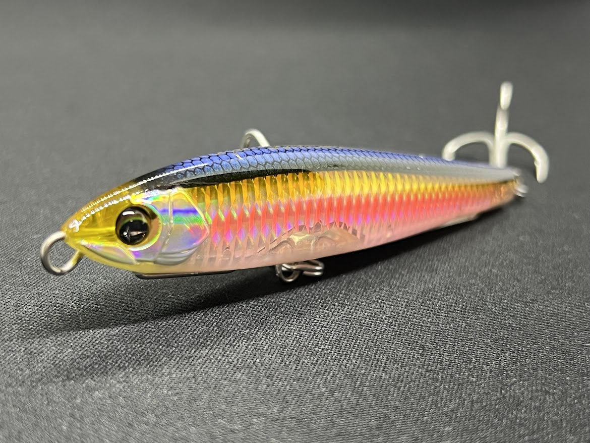
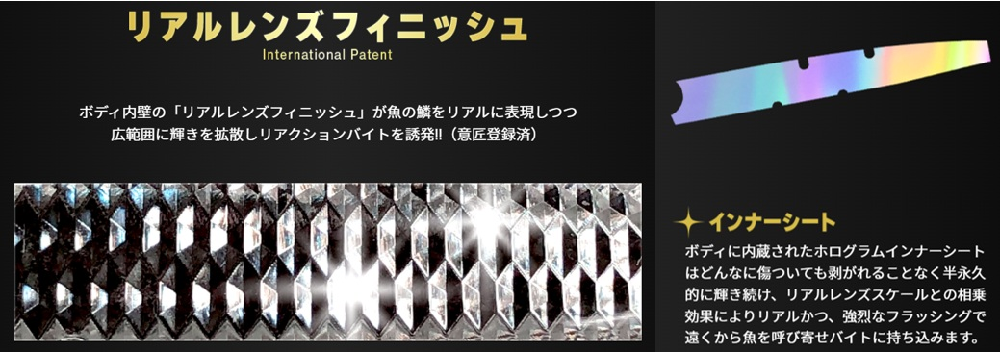
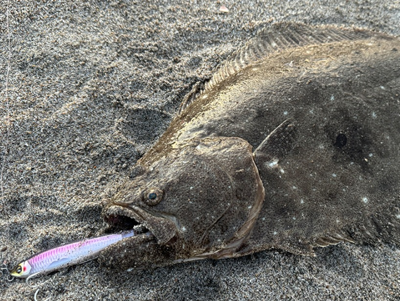
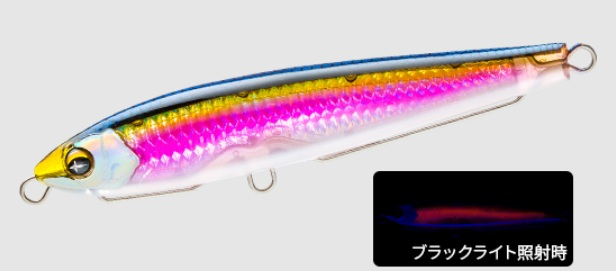
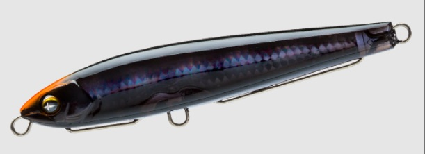
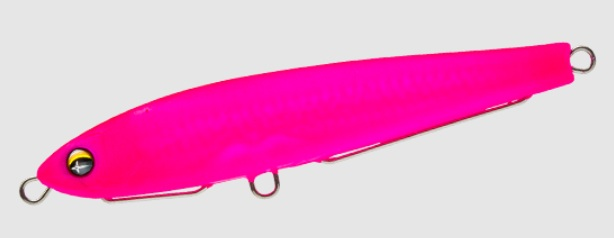
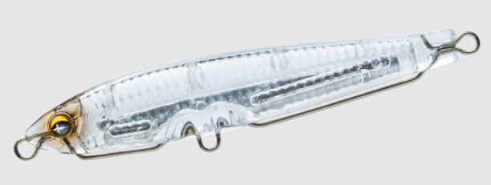

SONICBOOM® SBショット115S
SONICBOOM® SBショット115SはDUELのシンキングペンシルです。
驚異的な飛距離と半永久的な輝きのアピールで、シャローエリアで無双！？

スペック
- メーカー
- DUEL
- 長さ
- 115 mm
- 重さ
- 40 g
- フック
- #2×2
- リング
- #5
- レンジ
- オールレンジ
- タイプ
- シンキングペンシル
- 沈下タイプ
- シンキング
- アクション
- スイングアクション
- ターゲット
- 青物
- 価格
- 2310円(税込)
- 発売日
- 2026-03-14
ソニックブーム SBショット115Sの特徴
圧倒的な飛距離とアピール力でシャローエリアの魚を誘惑する！
-
圧倒的な遠投性能
40gという振りぬきやすい重さと薄めのボディ形状で最大90mの圧倒的飛距離を実現しました。
-
遠浅エリアや水面直下のスロー攻略
非常に浮き上がりの早い設計。シャローヤ水面直下でスローに引いてアピールが可能です。
-
半永久的に輝く"SBシステム"

画像出典:DUEL公式HP
リアルレンズフィニッシュ：ボディ内壁のレンズ加工により、鱗の反射をリアルに再現。
ホログラムインナーシート：ボディ内部の輝くシートで表面が傷ついても繁益仇敵に日ラッシングが持続します。
ソニックブーム SBショット115Sの使い方・得意な状況
基本的な使い方は、表層をゆっくり見せることを意識しながらスローに巻くのが良いです。
また、ストップ＆ゴーも効果的で、止めた時にバックスライドローリングフォールをするため、魚に効果的な「食わせの間」を演出できます。
得意なシチュエーションは遠浅のサーフなどのシャロー帯。得意の遠投により、ヒラメや青物を根がかりを恐れずに釣ることができます。
また、ラフコンディションの磯もオススメ。潜りにくい特性で荒れた海のサラシでも安定した泳ぎで、ラインテンションを張っておくだけでルアーを見せることが可能です。
ワンポイント
高い遠投性とシャローエリアを攻めれる設計を活かして、今までは根がかりが怖くて攻められなかった場所での使用にオススメ。 磯ではヒラマサなどの大型青物からヒラスズキ、サーフではヒラメやオオニベ、堤防からのキャスティングでカツオや青物など幅広く使用できるルアーです。

画像出典:DUEL公式HP
人気カラー
SBショット115Sは全10色ラインナップ。その中でもオススメカラーを紹介。

ケイレッドシャイナーSBシリーズ人気No.1。マズメ時や曇りなどローライトな状況でのアピールが強いカラー

シルエットブラック真昼間やサラシなどの泡の中でシルエットがはっきり出る。オレンジヘッドで釣り人も見やすいのが地味にうれしい。

マットピンク派手なピンクかつマットフィニッシュの効果で、プレッシャーをかけ過ぎずに目立たせる。

クリアーシラスなどの極小ベイトの際に最適のカラー。ルアーサイズが多少あってなくても釣れます。
画像出典:DUEL公式HP
ソニックブーム SBショット115Sに似ているルアー
- モンスターショット110
- ヘビーショット125
- オーディン130S